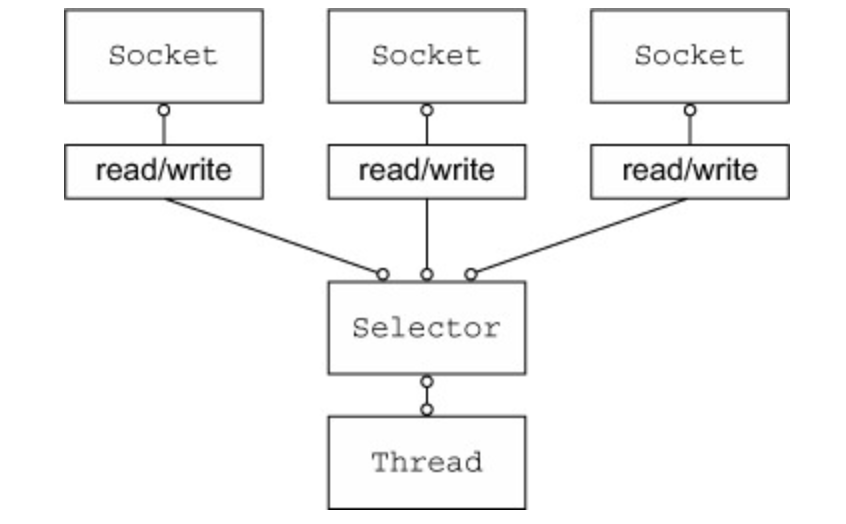

네티는 자바 기반의 비동기 기반의 네트워크 프레임 워크입니다. 네티는 애플, 트위터, 페이스북, 구글, 인스타그램 등을 포함한 사용자 커뮤니티를 포함해 발전하고 있습니다. 네티는 JAVA 1.6 이상에서 외부 의존성 없이 동작 가능합니다.
1. 채널
채널은 NIO의 기본 구조입니다. 네티는 싱글 쓰레드도 생성된 1개의 셀렉터가 N개의 채널을 관리합니다.
- Thread -> Select -> {채널1, 채널2, 채널3, …}
셀렉터는 이벤트 리스너 역할을 수행합니다. 클라이언트 요청이 들어 왔거나, 데이터가 도착했을 경우 셀렉터에 알립니다.
[셀렉터를 이용한 Non-blocking I/O]

하나의 셀렉터로 다중 소켓을 처리할 수 있습니다.
채널은 Buffer 읽기, Buffer 쓰기를 제공하는 인터페이스입니다.
읽기 동작
@Override
protected void channelRead0(final ChannelHandlerContext ctx, final HttpObject httpObject) {
if (httpObject instanceof HttpRequest) {
HttpRequest httpRequest = (HttpRequest) httpObject;
QueryStringDecoder queryString = new QueryStringDecoder(httpRequest.uri());
..
쓰기 동작
ByteBuf content = Unpooled.copiedBuffer(json, CharsetUtil.UTF_8);
FullHttpResponse response = new DefaultFullHttpResponse(HTTP_1_1, OK, content);
response.headers().set("Content-Type", "text/plain");
response.headers().set("Content-Length", response.content().readableBytes());
if (!keepAlive) {
ctx.write(response).addListener(ChannelFutureListener.CLOSE);
} else {
response.headers().set("Connection", "keep-alive");
ctx.write(response);
}
ChannelFuture
- addListener() : 작업 리스너 등록
- removeListener() : 작업 리스너 제거
- await() : I/O 작업 완료 대기
- sync() : I/O 작업 대기중 실패 하면 실패 이유 반환
2. 콜백
예) 새로운 연결이 발생하면 channelActive 함수가 호출됩니다.
@Sharable
public class EchoClientHandler extends SimpleChannelInboundHandlerAdapter<ByteBuf> { @Override
public void channelActive(ChannelHandlerContext ctx) {
ctx.write(Unpooled.copiedBuffer(ìNetty rocks!ì, CharsetUtil.UTF_8);
}
}
3. 퓨처
작업 완료후 애플리케이션에 종료 알람을 해줍니다.
@Override
public void channelReadComplete(ChannelHandlerContext ctx) {
ctx.writeAndFlush(Unpooled.EMPTY_BUFFER).addListener(ChannelFutureListener.CLOSE);
}
4. 이벤트와 핸들러
비동기 이벤트 기바입니다. 비동기는 작업 완료를 기다릴 필요 없이 즉각적인 응답이 가능한 구조입니다. 비동기 메서드는 작업 완료 후 에작업 완료 됐음을 통보할 수 있습니다.
- 채널 핸들러
- 네티의 I/O 이벤트 처리, 작업을 다음 처리기로 전달하는 인터페이스 / 비즈니스 로직의해 처리
- 핸들러 부류
- 인바운드 : ChannelInboundHandler
- 아웃바운드 : ChannelOutboundHandler
ChannelInboundHandler
-
channelRegistred : Channel이 EventLoop에 등록되고 입출력을 처리할 수 있으면 호출됨
-
channelUnregistered : Channel이 EventLoop에서 등록 해제되고 입출력을 처리할 수 없으면 호출됨
-
channelActive : Channel의 연결과 바인딩이 완료되어 활성화되면 호출됨
-
channelInActive : Channel이 활성 상태에서 벗어나 로컬 피어에 대한 연결이 해제되면 호출됨
-
channelRead : Channel에서 데이터를 읽을 때 호출됨
-
channelReadComplete : Channel에서 읽기 작업이 완료되면 호출됨
-
channelWritabilityChanged : Channel의 기록 가능 상태가 변경되면 호출됨
OutOfMemoryError를 방지하기 위해 너무 빠르게 기록되지 않게하거나, Channel이 기록 가능한 상태가 되면 기록을 재개할 수 있다. Channel의 isWritable() 메서드를 호출해 해당 채널의 기록 가능 여부를 감지할 수 있다. 기록 가능 여부를 결정하는 임계값은 Channel.config().setWriteHighWaterMark() Channel.config().setWriteLowWaterMark() 메서드로 설정한다. userEventTriggered : POJO가 ChannelPipeline을 통해 전달돼서 ChannelboundHandler.fireUserEventTriggered()가 트리거되면 호출됨
심플 채널 인바우드 핸들러 예
public class ServerHandler extend SimpleChannelInboundHandler<HttpObject> {
private HttpRequest httpRequest;
private HttpPostRequestDecoder httpDecoder;
@Override
protected void channelRead0(final ChannelHandlerContext ctx, final HttpObject httpObject)
throws Exception {
if (httpObject instanceof HttpRequest) {
httpRequest = (HttpRequest) httpObject;
...
}
if (httpDecoder != null) {
if (httpObject instanceof HttpContent) {
final HttpContent chunk = (HttpContent) httpObject;
...
}
}
}
}